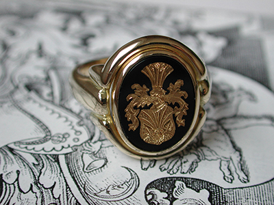

Pecatny prsten je product, ktory si vyzaduje najviac trpezlivosti pri hladani firmy / klenotnika/, ktora by to dokazala zrealizovat. Na Slovensku sa mi nepodarilo najst nikoho, kto by bol ochotny vyrobit pecatny prsten. V zahranici su klenotnici, ktori sa specializuju aj na vyrobu pecatnych prstenov. Pecatne prstene s rodinnym erbom ktore vidite su zlate a ich cena sa pohybuje od 10 000 Euro a viac. Zalezi od pouziteho zlata a kamenov
